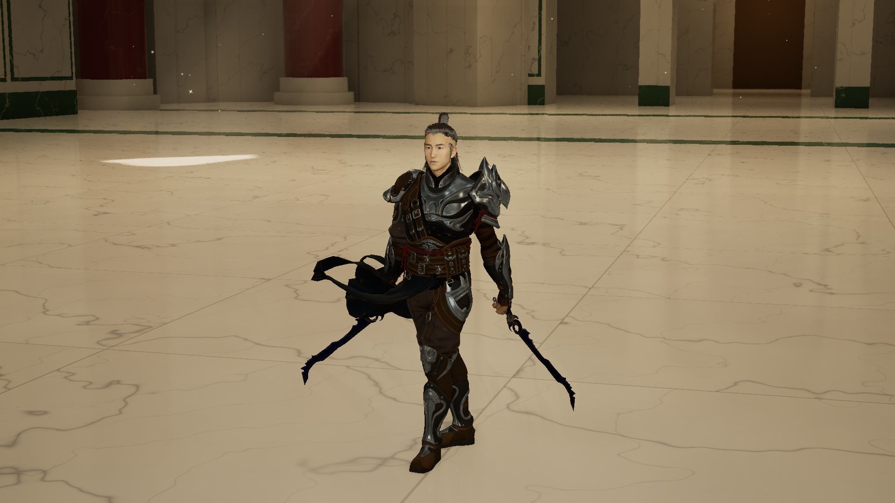
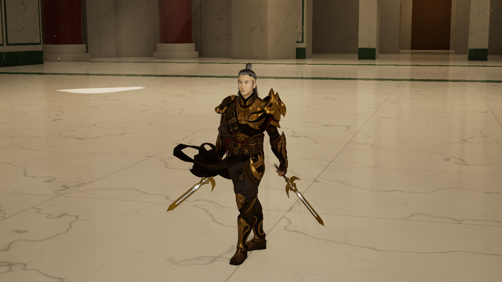

Paladin · 角色视频评审
2026 年 11 月 4 日更新 · 1080p 网页视频。每段都可单独打开、全屏播放；静帧可放大查看。长片为网页压缩版，原始渲染文件保留。
Lightblade · 蓝剑定型，轻装重新筛选
上一套黑灰衣料、银色护肩服装已淘汰，停止适配。蓝剑保持定型，继续寻找轻盈的武艺高手着装。
打开 Lightblade 独立评审 →蓝剑 · 已认可的定型近景
以下蓝银双剑外观已获认可。保留源模型与原材质，以此为基准搭配新轻装，并继续做动作中的适配。
实时进度截图
以下为开发中间产出，完整死亡演示正在逐段检查。可打开原始截图及时反馈。
Original Sovereign · 已取消，历史归档
按最新要求停止该角色的资源查找、建模与渲染。历史文件保留。已认可的女性 Sovereign 不受影响。
历史局部结构稿 GLBLightblade · 轻装方向回看
最新方向：撤下厚重装甲，保留原脸、布料和原敏捷双持动作。这两段用于比较轮廓与配剑；新轻装组合还在试穿。
Lightblade · 原轻装与蓝色双剑
Lightblade · 原轻装与金色双剑
蓝剑外观已认可，开始配套轻装。 上方蓝银双剑效果已选定；下方早期发黑视频保留作历史对照。新开放服装资源的穿戴和动作适配正在制作。
Lightblade · 回到轻甲与武艺高手
已选方向：原轻装与蓝色双剑。蓝剑导入后的金属反光偏黑仍需修正；下方保留本轮选择前的对比。
受击与死亡 · 制作进度
先看四段连看版，也可逐段查看掉剑跪倒、胸口出血两秒后倒地、断身与头部重击。以下为独立动作试拍；腰腹伤口旧片保留对照。
四种死亡效果 · 连看
头部重击 · 头盔碎裂
掉剑跪倒 · 连续动作
胸口受伤 · 两秒后倒地
重斩断身 · 侧面试片
受伤后倒地 · 中间版
Sovereign · 技能修正进度
造型保留已认可版本。先查看技能照脸修正版和空中动作中间片；死亡与复活已换用专业后倒动作；天降落点也已重新实拍。
Sovereign · 痛叫与后倒试片
Sovereign · 上轮倒地参考（重做中）
Sovereign · 技能照脸修正版
Sovereign · 天降落点修正版
Sovereign 造型已定型。 Lightblade 正在回到轻甲、武艺高手的方向：布料与活动空间优先，原轻装作为轮廓参照。厚甲换装保留为已否定方向的对照。
Lightblade · 上一轮厚甲换装对照
第一版实际换装：保留原脸与原动作，试穿现有专业服装。深蓝晶刃和金色翼饰圣剑均有实际佩戴小样。下方绿金双剑保留为服装升级阶段的对照，服装与新双剑仍是候选。
Lightblade · 新着装与深蓝双剑动态
Lightblade · 翼饰圣剑与黑金着装
Lightblade · 深蓝晶刃与蓝银着装
Lightblade · 蓝银着装候选
Lightblade · 黑金着装候选
Lightblade · 新着装第一版
Lightblade · 新着装动态
上一轮换装 · 历史实拍对照
以下厚甲方向已根据反馈停止推进，保留作对照。最新轻装方向见页面顶部。深蓝双剑已有完整动作试片；金剑转身握持与两套命中仍在继续适配。
深蓝晶刃 · 蓝银着装

翼饰圣剑 · 黑金着装

双剑造型对比
A、B 使用相同角色、服装和动作。先比较剑型与装饰；两套都保留，尚未锁定最终造型。
A · 绿金雕纹双剑
B · 红金细刃双剑
绿金双剑 · 实战与动态
服装升级前的 A 候选。可分别查看真实战斗、闪避和攻击动作。
A · 双剑实战修正版
A · 闪避与攻击动作
角色与战斗更新
Champion 的攻击、不同受击反应与处决，以及已定型的 Sovereign。
Champion · 一对多三轮战斗参考
Champion · 处决演示
Sovereign · 最新近战修正版
Sovereign · 当前造型近景
Sovereign · 表情小样
完整招式参考
Seraph 保留已认可版本。Sovereign 完整片为此前版本，最新面部和闪光改动请对照上面的短片。
Sovereign · 八招完整参考
Seraph · 火焰宽剑完整演示
新资源 · 作者预览
以下是作者页面预览。实际深蓝晶刃、金色翼饰双剑与新着装的小样见上方着装升级区，也可打开作者 3D 页面比较。
蓝色晶体弯刃

金色翼形护手圣剑

反馈时可直接说 A、B、C、D，或告诉我哪一段视频需要修改。Original Sovereign 已按要求取消。